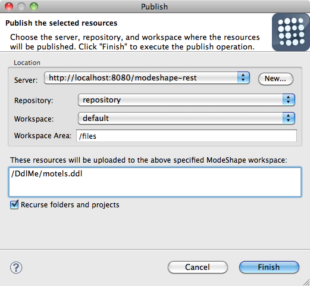

Last revised November 24, 2010
|
Publishing Wizard |
The publishing wizard now allows you to optionally enter a repository workspace area. A workspace area is a known repository location that is being monitored by the ModeShape service responsible for sequencing files. A file published to a workspace area will get sequenced as long as there is a sequencer operating on their file type. The workspace area path is appended to the server URL to determine the root location the wizard uses to publish and unpublish files. A file's project path is appended to the root path to determine its repository location. Here is what the ModeShape publishing wizard looks like:  |